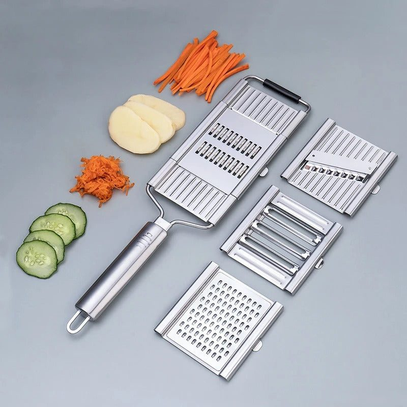
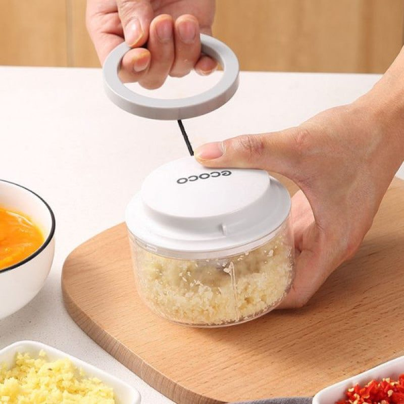

- Plan the fruit, then the order
- Choose the right chopping tool
- Keep fruit from browning
- The masala and dressing
- Make cleanup easy
- A sample prep timeline
- Where to look for tools
- A calmer hour before Maghrib
Ask anyone in Pakistan which dish defines the iftar table and fruit chaat is near the top of the list. It is simple, colourful and loved by children and elders alike. It is also surprisingly time-consuming. Peeling, coring and chopping six or seven fruits for a large family, often in the last hour before Maghrib when everyone is tired and thirsty, is a real job.
This guide focuses on making that job faster and less stressful, without cutting corners on taste.
Plan the fruit, then the order
Most chaat combinations include banana, apple, guava, orange or kinnow, pomegranate, grapes and, in season, mango or melon. Some families add boiled chickpeas or potatoes. The key is the order in which you prep them.
Start with the fruits that hold up well: apples, guavas, grapes and chickpeas. Do citrus next, since segments can sit for a while. Leave banana and any very soft fruit for last, because they brown and turn mushy quickly. Pomegranate seeds can be removed the night before and kept in a covered container in the fridge.
Choose the right chopping tool
A sharp knife and a board will always work, but hand tools save time when you chop the same thing day after day for a month.

- Pull-string choppers are good for onions, chillies and herbs for chaat masala blends and for chopping boiled chickpeas or potatoes roughly. A few pulls give a coarse chop; more pulls give a fine one.
- Manual stainless steel choppers with a press or crank handle are better for firmer items and larger quantities.
- Electric slicers with interchangeable blades help most when you also prepare salads, cucumber slices or potato for pakoras every day.
Fruit like banana and orange is still best cut by hand, as machines can crush it. Use tools where they actually help rather than forcing everything through them.
Keep fruit from browning
Apples and bananas turn brown when cut surfaces meet air. A squeeze of lemon juice or a splash of orange juice over the cut fruit slows this down and also suits the tangy flavour of chaat. Toss gently as you go, so each batch gets coated.
Keep the bowl covered in the fridge until shortly before iftar. Cold fruit chaat tastes noticeably better on a hot day, and the chill helps the fruit keep its bite.
The masala and dressing
Chaat masala, a little black salt and sugar or honey make the classic dressing. Some families add a little cream or condensed milk for a sweeter version. Add dressing as close to serving as possible. Salt draws water out of fruit, so dressing it too early leaves a watery bowl.
Make cleanup easy
Iftar prep tools get used every single day in Ramzan, so they must be easy to wash. Before buying, check whether blades come out for cleaning and whether bowls are dishwasher or soak friendly. Rinse choppers straight after use; dried fruit sugar is much harder to remove than fresh.

A sample prep timeline
- Night before: seed pomegranate, boil chickpeas, wash grapes.
- Ninety minutes before iftar: chop apples, guava and citrus, toss with lemon juice, refrigerate.
- Thirty minutes before: chop banana, add to the bowl, mix in chickpeas.
- Ten minutes before: add chaat masala and dressing, toss and serve.
Where to look for tools
If you want to replace an old knife-only routine, the range of choppers and peelers at www.trenducts.pk/collections/choppers-and-peelers includes manual and electric options, delivered across Pakistan. Pick one that suits the volume you cook rather than the biggest model available.
A calmer hour before Maghrib
Good fruit chaat is not about fancy ingredients. It is about fresh fruit, cut at the right time, kept cold and dressed just before serving. With a sensible prep order and one or two good tools, the last hour before iftar becomes a lot calmer, and you might even have a few minutes to sit down before the azaan.